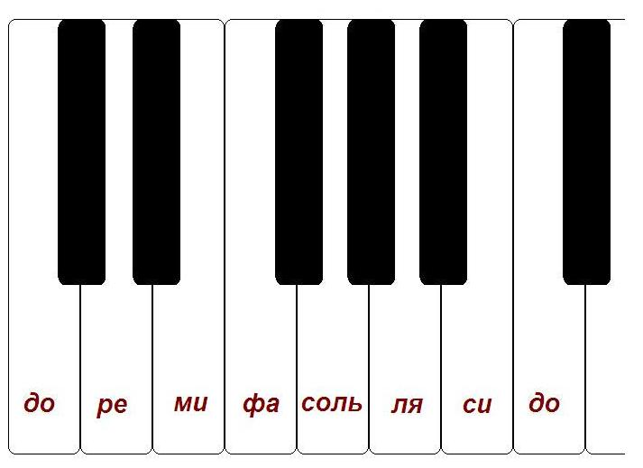
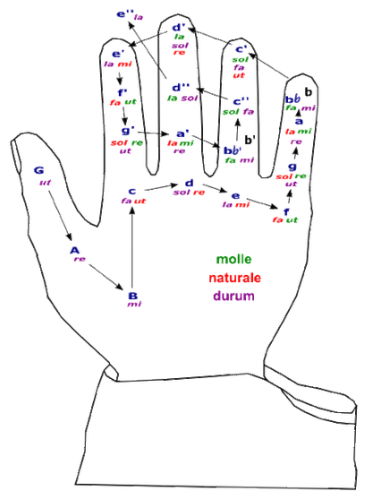
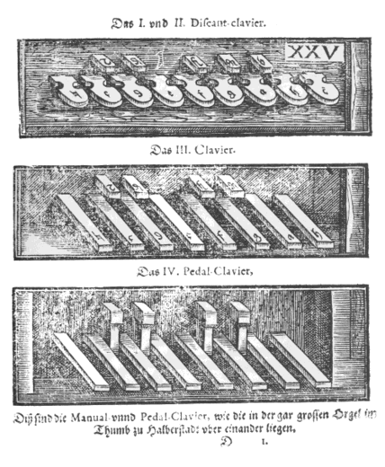

Почему стандартная опорная тональность для западных инструментов - до-мажор? Почему не ля-мажор?
Задавая этот вопрос, я не имею в виду, что до мажор – самая часто используемая тональность. Мне интересно, почему ноты на белых клавишах фортепиано структурированы относительно тональности до мажор, а не ля мажор?

Если вкратце, то важная роль до мажора как тональности без знаков альтерации – результат исторических практик, которые сформировались и развивались в рамках средневековой вокальной традиции, до изобретения и стандартизации современной раскладки клавиш, то есть до принятия фиксированных мажорных и минорных гамм и тональностей.
Клавиши расположены именно так не потому, что с современной точки зрения это наиболее простая и эффективная раскладка – их расположение основано на доклассической западной музыкальной теории и в ранние периоды развития менялось несколько раз, становясь более удобным для исполнителя.
Чтобы дать полный ответ на этот вопрос, потребуется раскрыть тему средневековой музыкальной теории.

Средневековые гексахорды и Гвидонова рука – это вам не бабушкины сказки
Гвидонова рука была создана Гвидо д’Ареццо (Guido d'Arezzo) (ок. 991 – 1033), монахом бенедиктинского ордена, задолго до появления современной семинотной последовательности. Она помогала вокалистам (поющим григорианский хорал) высчитывать интервалы и определять высоту звуков. Она являлась основой западной музыкальной теории в течение сотен лет, но о ней позабыли примерно в начале семнадцатого века.
Мы привыкли к системе, в которой музыка ассоциируется с мажорным или минорным типом семитональной гаммы, а когда мы говорим «соль» или «ре бемоль», то имеем в виду высоту звука определенной измеримой частоты. Однако в средние века такая связь (высоты звука и частоты) не была очевидной. Гвидонова рука позволяла организовать ноты и выделить три гексахорда, то есть три определенных группы из шести нот:
Гексахорд от соль (G) или hexachordum durum («твердый» гексахорд):
Соль(ut) Ля(re) Си(mi) До(fa) Ре(sol) Ми(la)
Гексахорд от фа (F) или hexachordum molle («мягкий» гексахорд):
Фа(ut) Соль(re) Ля(mi) Си(fa) До(sol) Ре(la)
Гексахорд от до (С) или hexachordum naturale («натуральный» гексахорд):
До(ut) Ре(re) Ми(mi) Фа(fa) Соль(sol) Ля(la)
[Прим. перев.: в системе Гвидо слоговые названия (ut, re, mi, fa, sol, la) не связаны с абсолютной высотой звуков – в каждом из гексахордов слоговые названия неизменны, а высота звука меняется]
Таким образом, Гвидо смог учесть все семь диатонических нот и покрыть весь употребительный звукоряд. Хроматические тона, такие как ля бемоль и до диез, тогда понимались по-другому. Используя эти шестинотные шаблоны вместе либо по отдельности, можно было получить различные тональные лады.
В качестве названий для сольмизационных слогов были выбраны первые слоги гимна чествования Иоанна Крестителя «Ut queant laxis» [Ut queant Laxis/ Resonare fibris/ Mira gestorum/ Famuli tuorum/ Solve polluti/ Labii reatum. Слог «si» (Sancte Iohannes) был добавлен в систему сольмизации намного позднее – прим. перев.]. Как было сказано ранее, эти названия до сих пор используются для обозначения нот (почти повсеместно). Буквенные обозначения нот (C, D, E, F, G, A, B) используются только в англо- и немецкоязычных странах.
Сейчас очень хочется назвать гексахорды тональностями – неполными версиями гамм, скажем, соль, фа и до мажор. Они действительно похожи на гаммы, а нам известно, что они [гаммы] соответствуют определенным тональностям, но средневековая система нотации была более гибкой: каждый из этих трех гексахордов (или их комбинация) мог быть использован в любой из многих средневековых тональностей.
Система Гвидо была первой формой системы сольфеджио: нота ut [здесь и далее курсивом будет обозначаться гвидонова «относительная» сольмизация, не привязанная к современной музыкальной нотации – прим. перев.] была заменена нотой do, так как её было неудобно петь (вы пытаетесь их пропеть, не так ли?). В системе Гвидо расстояние между mi и fa всегда равняется полутону, а расстояние между другими слогами – полному тону.
Мы привыкли, что интервал – это фиксированное расстояние между двумя нотами, но так было не всегда. Буквы обозначали позиции на нотном стане, но не были привязаны к определенным нотам – в средние века в основном писали только хоровую музыку, поэтому не было необходимости в строго закрепленных названиях. Вокалисты не нуждались в фиксированных названиях для нот (по крайней мере в то время), в отличие от музыкальных инструментов со строгим расположением струн и клавиш.
Современный пианист, несомненно, смутился бы, услышав что-то вроде: «Все твои до теперь фа» или «Ха! Я только что поменял все соль на до». Гаррик Сайто (Garrick Saito) наглядно показал это в своем ответе на Quora. Вокалистам, которые изучали структуры из шести нот, где всего один интервал отличается от других, достаточно было знать, где он находится. В гексахордах Гвидона этот интервал всегда расположен между mi и fa, вне зависимости от того, с какой ноты начинается последовательность (вы могли заметить, что гексахорды совпадают с тремя современными ключами тональностей: соль, фа и до, что неслучайно).
Раньше у нот не было фиксированного «центра» или стандарта высоты звука, как, например, ля=440 Гц. Средневековые вокалисты просто пели в той тональности (не совсем произвольно, но и не сверхточно), которая больше подходила для типа исполняемой музыки, опираясь, например, на ноты до, фа или соль. В этом им помогали композиторы, старавшиеся записать мелодию на нотный стан, не используя добавочных линеек, исходя из акустических и эстетических предпочтений того времени.
Проблема ноты си: осторожно, возможны акциденции
В системе гексахордов были некоторые теоретические несоответствия: отличалась роль ноты си.
do re mi fa sol la
соль ля си до ре ми
фа соль ля си до ре
(В гексахорде от соль ноты ля и си соответствуют обозначениям re и mi, между которыми целый тон, но в гексахорде от фа – это mi и fa, между которыми должен быть полутон. Упс).
В отличие от других нот, положение ноты си (и ее значение) менялось в зависимости от используемого гексахорда. В гексахорде от соль расстояние между ля и си – это расстояние между нотами re и mi, равное целому тону, но в гексахорде от фа расстояние между ля и си – это расстояние между нотами mi и fa, то есть половина тона.
По этой причине гексахорд от соль называют «твердым», а гексахорд от фа – «мягким». В переводе с латинского dur и moll означают «твердый» и «мягкий» соответственно и все еще используются в Германии для обозначения мажорных и минорных тональностей (эти названия адаптированы именно для обозначения мажорных и минорных тональностей – речь в данном случае не идет об описании гексахордов). Знак альтерации «бемоль» является графическим представлением «мягкого си», в то время как знак «бекар» – графическим представлением «твердого си».
Гексахорд от до состоит из нот до, ре, ми, фа, соль, ля – там нет си, поэтому его называют «натуральным».
В средневековой музыке была возможность (и необходимость) быстрого перехода от одного гексахорда к другому при исполнении пассажа. Например, в гексахорде от фа нет ноты ми, и чтобы завершить восходящий лидийский лад – фигуру, соответствующую восходящей тональности фа мажор [фа, соль, ля, си бемоль, до, ре, ми, фа] – средневековым музыкантам нужно было взять первые четыре ноты гексахорда от фа [фа, соль, ля, си бемоль] и добавить к ним первые четыре ноты гексахорда от до [до, ре, ми, фа].
Эта практика до сих пор используется в музыкальной нотации при записи нот геометрическими фигурами, где, к примеру, си и ми имеют похожие формы и обозначают mi в разных гексахордах (от соль и до соответственно). Именно поэтому в некоторых сельских церквях Соединенных Штатов мажорные тональности все еще представлены в виде комбинации двух средневековых гексахордов.

Первые варианты расположения клавиш и сегрегация до мажора
Теория Musica ficta (искусственной/ненастоящей музыки) появилась в позднем средневековье/эпохе Возрождения и гласила, что построить «гвидоновы» гексахорды можно от любой тональности, а не только от соль, до или фа. Благодаря этому клавишные инструменты, отражающие стиль музыки того времени, стали по-настоящему хроматическими.
Например, чтобы построить гексахорд Гвидона от ре [ре, ми, фа, соль, ля, си], мне бы пришлось повысить ноту фа (или mi) на полтона (получить фа диез), чтобы между mi и fa осталось так же полтона. Теперь мы видим, что из-за структур гексахордов от фа и соль, си бекар/си-бемоль стала первой альтерацией – остальные появились позднее благодаря более широкому применению этих основополагающих принципов.
Существовало несколько вариантов расположения хроматических клавиш, которые учитывали все двенадцать нот (с учетом альтераций). Одна система состояла из восьми белых клавиш и четырех черных клавиш, а другая состояла из семи белых и пяти черных. Они показаны на иллюстрации выше, датированной XIV веком. В итоге стали использовать вторую систему – вверху изображения.
В непринятой системе 8 на 4 для «си мягкого» и «си твердого» (или для B и H, обозначающих си бемоль и си бекар, если использовать немецкую номенклатуру) использовались отдельные белые клавиши. Позднее за си бемоль была закреплена черная клавиша, следовательно, чтобы сыграть гамму до мажор, стали нужны только белые клавиши.
Также во многих клавишных инструментах начали использовать «разделенные клавиши». Это были черные клавиши, разделенные на две половины, которые более четко разграничивали, к примеру, ре диез и ми бемоль, чтобы их звучание не походило друг на друга. Такой подход перестал применяться, когда появились более совершенные системы настройки музыкальных инструментов.
Как было подмечено в некоторых комментариях, «расовая сегрегация» тональности до мажор не связана (по крайней мере, не больше, чем описано выше) с техническими характеристиками клавишных инструментов.
Стоит заметить, что начинающие музыканты легко справляются с гаммой до мажор, потому что ее можно сыграть, не используя черные клавиши – вероятно, из-за этого в ней проще всего читать ноты. Опытные же пианисты, играя в этой тональности, испытывают трудности: сказывается отсутствие черных клавиш во время быстрой игры. Без черных клавиш трудно ориентироваться, потому игра в тональности до мажор напоминает скольжение по льду. Шопен, обучая студентов, оставлял до мажор напоследок, так как считал ее наиболее неудобной (с точки зрения техники игры) тональностью.
Для оркестровых духовых инструментов все немного по-другому – для них наиболее удобный звукоряд нотируется в строе до, а их реальное звучание обозначается строем инструмента или близким к нему (наиболее частые: си бемоль, ля, фа, ми бемоль). Это сделано опять-таки из-за того, что ноты, написанные в тональности до мажор, легче всего читать.